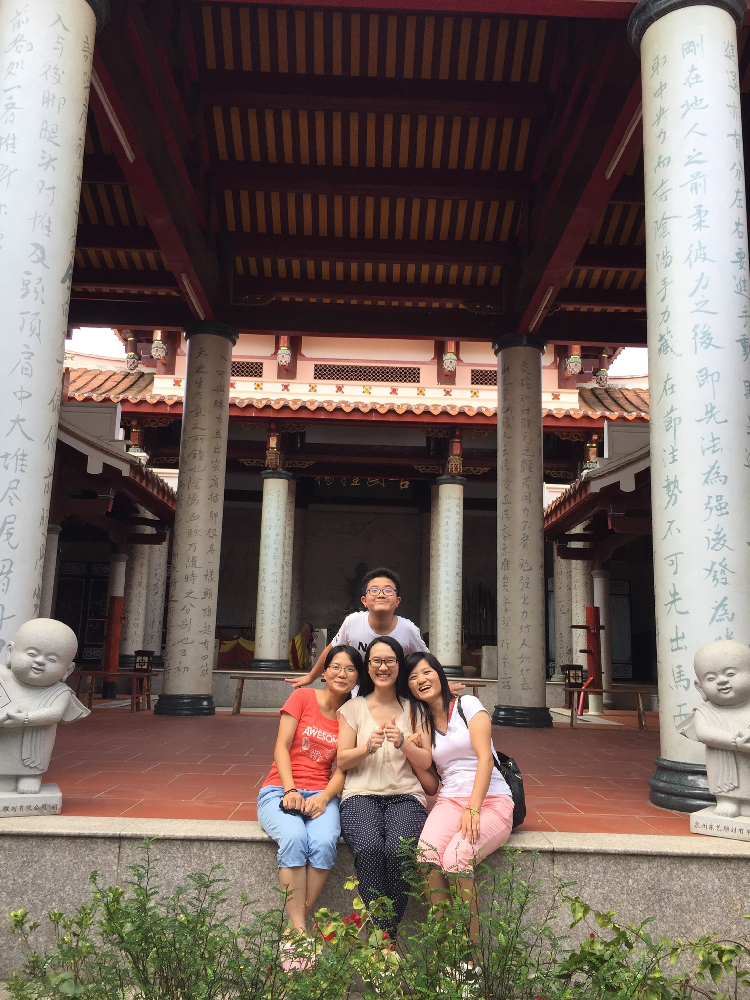

1997
Jiaru Cai was born into a Southern Chinese family in 1997. She has three siblings, which is rare under the one-child policy. Before she was 8 years old, she only knew her oldest sister Queenslin. In the year of her younger brother's birth, her second sister Janet, who was 13 years old, returned to her family and grew up with other three kids in the house since then.
